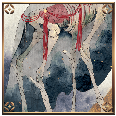

[ 御祀 潺 ] がダイスシンボルを公開。出目は 1 です。
[ 藻 ] がダイスシンボルを公開。出目は 4 です。
[ 葛火焔郎 ] がダイスシンボルを公開。出目は 2 です。
[ 煤木野灰吏 ] がダイスシンボルを公開。出目は 4 です。
GM
＊ラウンド１
プロット４：藻、灰吏
プロット２：焔郎
プロット１：潺
GM
藻と灰吏は2D6を。出目の低い方から行動していただきます。
煤木野灰吏
2d6 (2D6) ＞
5[1,4] ＞ 5
GM
処理上の問題なので、実際は同時行動として処理いたします。
GM
同時行動が発生した場合に限り、逆凪の適用がすべての行動の終了後になります。
GM
この場合、灰吏さんや藻さんが禁術や獣化でファンブルしたとしても、そのまま攻撃忍法の判定は可能になる、といったような裁定ですね。
煤木野灰吏
2D6>=5 （判定：罠術） (2D6>=5) ＞ 8[2,6]
＞ 8 ＞ 成功
GM
灰吏がクライマックスフェイズから脱落するか、禁術による書き換えが入るまで、神槍の使用者は使用後に接近戦ダメージを１点受けます。
煤木野灰吏
続いて魔琴を使用します。対象は潺さん。
煤木野灰吏
2D6>=5 （判定：遊芸） (2D6>=5) ＞ 7[2,5]
＞ 7 ＞ 成功
御祀 潺
■奥義
《神流：慧眼ノ法》
指定特技 ：千里眼の術
エフェクト：完全成功(判定を成功にする)/くらまし(奥義破りの判定に-2)/発動条件(生命点が3以下の時しか使用できない)
効果・演出：僅か先の未来を見て行動を最善へと導く
GM
完全成功により回避判定が成功ですね。
残りの３人に潺の奥義情報が渡ります。
煤木野灰吏
灰を散らして、鋼線が結界の内に張り巡らされる。
葛火焔郎
合図と共にまず退がる。藻の間合いに入ることを避けた。
葛火焔郎
それが仇。”いつも”ならば決してあるはずのない、妨げ。
煤木野灰吏
指を引く。鋼線自体が意思を持つかにように動いて、焔郎を締め上げる。
煤木野灰吏
そのつもりなら、この場に立ってはいない。
煤木野灰吏
「動きたくても動けないくらい、叩きのめすしかねえんだよな」
御祀 潺
動きやすいとは言えない、厚手の布が翻る。
御祀 潺
しかしそれは、一瞬を舞うシノビにとっての全て。
藻
MT 異形表(4) ＞
妖魔化している間、戦闘中、1ラウンドに使用できる忍法のコストが、自分のプロット値+3点になり、装備忍法の【揺音】を修得する。
[ 藻 ] 忍術 : 1 → 0
藻
頽れるように地に伏せる。
死者のように青白いはだに、神域の光が灯る。

藻久去鹿彌
白い骨から零れず湛えられる臓腑。
藻久去鹿彌
太古より人が肉を食むさいに言葉を発することかなわぬ、沈黙の数秒を司る食肉の神 ──
藻久去鹿彌
2d6 (2D6) ＞
7[1,6] ＞ 7
GM
成功ですね。以降、藻の攻撃忍法のダメージに接近戦ダメージ１点が上乗せされます。
GM
手番の攻撃行動がまだ残っています。行動があるなら宣言を。
藻久去鹿彌
神様に成りたくて成るわけじゃない。
成ろうとしてなるわけじゃない。
藻久去鹿彌
今、こうして神に成る少女の。
精神の残り香が、ばらの香りだけを残して脱ぎ捨てられて。
藻久去鹿彌
少女だけになったからだの。
ちいさなうらみごとが。
涙のように零れてくる。
藻久去鹿彌
ヘアオイルとか。
リップクリームとか。
フラペチーノとか。
藻久去鹿彌
消えちゃうものばっかり頼んじゃったな。
藻久去鹿彌
だいじ、とか。
いっしょにいてほしい、とか。
GM
クリティカルヒット/断ち/回数制限/第六感。
GM
自らの秘密を開示し、回想シーンの演出をお願いします。
煤木野灰吏
秘密：灰吏
あなたはPC1がPC2に執着しすぎていることを危惧している。
このままPC2への執着を保っていては、PC1さえもPC2と同じようにシノビガミとなってしまうのではないだろうか。
そう危惧したあなたはPC2の家からプライズ『帝光の書』を奪った。
これを調べれば、この心配が杞憂であるかどうかが分かるはずである。
煤木野灰吏
この場に、お前の敵として立っていることも。
煤木野灰吏
お前のやりたいことを認めて、背中を押してやった方がお前は喜ぶだろうな。
煤木野灰吏
2D6+3>=7 （判定：流言の術） (2D6+3>=7) ＞
10[4,6]+3 ＞ 13 ＞ 成功
藻久去鹿彌
あの清流で師に見せたものとは。
一線を画すほどの荒々しさ。
藻久去鹿彌
一切研ぎ澄まされていない。
暴力的な角の一撃。
藻久去鹿彌
神魔をわけるものはなんなのか。
ただここに人の糸に絡めとられる神は。
葛火焔郎
絡め取られた腕を動かす。筋肉を引き裂く鋼線をものともせず。
GM
【鬼影】ゆえ、【神槍】の判定には-2がつくので注意してください。
葛火焔郎
2D6>=6 陽炎（判定：骨法術） (2D6>=6) ＞ 7[1,6]
＞ 7 ＞ 成功
葛火焔郎
2D6-2+1>=5 （判定：手裏剣術） (2D6-2+1>=5) ＞
10[5,5]-2+1 ＞ 9 ＞ 成功
藻久去鹿彌
2D6>=6 （判定：手練） (2D6>=6) ＞
5[1,4] ＞ 5 ＞ 失敗
[ 藻久去鹿彌 ] 頑健 : 2 → 0
[ 藻久去鹿彌 ] 体術 : 1 → 0
GM
悩むところですが、禁術の対象はシーンだからGMが振ります。
[ 葛火焔郎 ] 妖術 : 1 → 0
GM
プロット２の処理はこれにて終了ですね。演出を。
[ 葛火焔郎 ] 忍術 : 1 → 0
[ 煤木野灰吏 ] 忍術 : 1 → 0
[ 煤木野灰吏 ] 妖術 : 1 → 0
[ 煤木野灰吏 ] 忍術 : 0 → 1
[ 煤木野灰吏 ] 妖術 : 0 → 1
葛火焔郎
ブヂ、と筋肉が嫌な音を立てるのが分かる。
葛火焔郎
駆け出す足は影。瞳は真っ直ぐに、華奢な少女を見つめて。
葛火焔郎
振り返りもしない。視線を遣ることもない。
藻久去鹿彌
糸に絡めとられた角が傾いで、骨の脚がもつれる。
葛火焔郎
おまえが神様になんかなりたくないって言うんなら
藻久去鹿彌
─ そも、この神は初めから。
ただ名もなき神に捧げられた贄だったのではないか。
藻久去鹿彌
それを人々が。
神としただけなのではないか。
藻久去鹿彌
冠された少女が神の臓腑に収まり。
ただ、何かを待っている。
御祀 潺
MT 異形表(1) ＞
1D6を振り、「妖魔忍法表A」で、ランダムに忍法の種類を決定する。妖魔化している間、その妖魔忍法を修得しているものとして扱う。この異形は、違う種類の妖魔忍法である限り、違う異形として扱う。
妖魔忍法表A ＞ 【夜雀】(怪p.252)
[ 御祀 潺 ] 体術 : 1 → 0
御祀 潺
己に下ろすことのできなかった完全なる神。
御祀 潺
彼女は今頃、学校に行き、友人とフラペチーノを手に笑いあっていたのかもしれない。
御祀 潺
立ち込める霧の中、全身から獣の毛が伸びる。
御祀 潺
穢れを受けたその身に、触れる資格はなかろうとも。
GM
ラウンド終末です。脱落者も忍法もないでしょう。
GM
ダイス目を隠し、次のプロットへと変更し、秘話にてGMへと申告してください。
[ 煤木野灰吏 ] がダイスシンボルを公開。出目は 3 です。
[ 葛火焔郎 ] がダイスシンボルを公開。出目は 5 です。
[ 藻久去鹿彌 ] がダイスシンボルを公開。出目は 2 です。
[ 御祀 潺 ] がダイスシンボルを公開。出目は 2 です。
葛火焔郎
2D6>=6 （判定：骨法術） (2D6>=6) ＞
4[2,2] ＞ 4 ＞ 失敗
煤木野灰吏
ぎりぎりと、鋼線が焔郎の身体を締め上げる。
GM
【神槍】に組み合わせた【陽炎】の判定での失敗ということで、
【神槍】を対象にした【禁術】による接近戦ダメージ１点を受けます。
[ 葛火焔郎 ] 謀術 : 1 → 0
葛火焔郎
骨までを絡め取り、削ぐ鋼線に断たせる肉が無い。
葛火焔郎
鋼線を伝い、熱が。僅かに灰吏に届くだろう。
煤木野灰吏
2D6>=5 （判定：拷問術） (2D6>=5) ＞ 8[2,6]
＞ 8 ＞ 成功
煤木野灰吏
2D6>=5 （判定：遊芸） (2D6>=5) ＞ 9[4,5]
＞ 9 ＞ 成功
GM
はい。焔郎に３点の射撃戦ダメージが入ります。
葛火焔郎
■奥義
《天焔・火産霊之鳥（あめのほむら・ほむすひのとり）》
指定特技 ：意気
エフェクト：目覚め/不死身/回数制限
葛火焔郎
――君が行く道の長手を繰り畳ね焼き滅ぼさむ天の火もがも
葛火焔郎
「あ”あ”あ”あ”あ”あ”！！！！！！！！」
葛火焔郎
1D6-1 (1D6-1)
＞ 6[6]-1 ＞ 5
葛火焔郎
「こんなっ、ところで、負けられねえんだよ！！！！！！」
[ 葛火焔郎 ] 忍術 : 0 → 1
[ 葛火焔郎 ] 謀術 : 0 → 1
[ 葛火焔郎 ] 妖術 : 0 → 1
GM
葛火焔郎の攻撃忍法のダメージに、接近戦ダメージ１点が上乗せされます。
GM
焔郎に潰れている分野を１つ選択していただく形になりますね。
[ 葛火焔郎 ] 忍術 : 1 → 0
煤木野灰吏
骨を折り、肉を断つべく迫った、その尽くが溶かされる。
GM
藻、潺は2D6を。出目の低い方から処理します。
御祀 潺
2d6 (2D6) ＞
9[4,5] ＞ 9
藻久去鹿彌
2d6 (2D6) ＞
9[3,6] ＞ 9
御祀 潺
2ｄ6 (2D6) ＞
5[1,4] ＞ 5
藻久去鹿彌
2d6 (2D6) ＞
6[1,5] ＞ 6
御祀 潺
2D6+1-1>=5 （判定：用兵術） (2D6+1-1>=5) ＞
5[1,4]+1-1 ＞ 5 ＞ 成功
GM
灰吏さんは-1をつけて用兵術から回避判定を。
煤木野灰吏
誰か修正つけてくれませんか～？？？？？？？
煤木野灰吏
この場には俺に＋感情を持っている人が3人いますね？
煤木野灰吏
坊っちゃんは俺の応援なくても勝つから…………
煤木野灰吏
2D6-1>=7 （判定：遊芸） (2D6-1>=7) ＞
9[4,5]-1 ＞ 8 ＞ 成功
御祀 潺
あの日、頭を撫でた。その感触がよみがえる。
藻久去鹿彌
2D6>=5 （判定：異形化） (2D6>=5) ＞ 6[1,5]
＞ 6 ＞ 成功
GM
異形化と呪術。どちらでの回避を指定しますか？
煤木野灰吏
2D6>=9 （判定：流言の術） (2D6>=9) ＞
6[2,4] ＞ 6 ＞ 失敗
藻久去鹿彌
2d6 (2D6) ＞
7[2,5] ＞ 7
[ 煤木野灰吏 ] 体術 : 1 → 0
[ 煤木野灰吏 ] 戦術 : 1 → 0
藻久去鹿彌
踏み入るならば。
神の清濁を受け入れてもらうほか。
煤木野灰吏
神域に踏み入り、穢をまきちらす人の子。
藻久去鹿彌
神気をたたえ過ぎた神の血が。
人の皮膚を焦がす。
藻久去鹿彌
神が舞うと血が振り撒かれる。
土地が清められる、血。
藻久去鹿彌
神の動脈から流れ出るその血は。
今は、少女の涙にも似ている。
GM
ラウンド終末の忍法も、脱落もおそらくないでしょう。
GM
ダイス目を隠し、プロットを変更し、決定したら秘話にてGMに伝えてください。
[ 御祀 潺 ] がダイスシンボルを公開。出目は 5 です。
[ 煤木野灰吏 ] がダイスシンボルを公開。出目は 3 です。
[ 藻久去鹿彌 ] がダイスシンボルを公開。出目は 2 です。
[ 葛火焔郎 ] がダイスシンボルを公開。出目は 4 です。
GM
＊ラウンド３
プロット５：御祀潺
プロット４：葛火焔郎
プロット３：煤木野灰吏
プロット２：藻
御祀 潺
2D6>=6 （判定：用兵術） (2D6>=6) ＞
5[2,3] ＞ 5 ＞ 失敗
煤木野灰吏
今はまだ、ここを離れるわけにはいかない。
葛火焔郎
2D6>=6 （判定：骨法術） (2D6>=6) ＞ 9[3,6]
＞ 9 ＞ 成功
GM
成功ですね。【神槍】には【鬼影】により-2の修正が。
葛火焔郎
2D6-2+1>=5 （判定：手裏剣術） (2D6-2+1>=5) ＞
4[1,3]-2+1 ＞ 3 ＞ 失敗
[ 葛火焔郎 ] 器術 : 1 → 0
葛火焔郎
炎はなおも身体を焼く。絡みつく鋼線は熱され、更に動きを阻む。
葛火焔郎
それでも、手を伸ばさなければ。届かせなければ。
葛火焔郎
焦りが身を灼く。それを表すように肌が焦げ、肉を露わにし。
御祀 潺
儀式が始まれば、この眼は新たな神へと完全に受け継がれる。
煤木野灰吏
■奥義
《灰撒》
指定特技 ：拷問術
エフェクト：クリティカルヒット
効果・演出：巻き上がる灰が刃となり、身体を切り刻む。
煤木野灰吏
焔郎に絡みつく鋼線が熱され、とろけて、形を変える。
葛火焔郎
愚直に積み重ねてきた鍛錬によって練り上げられた身体を切り刻む、灰。
葛火焔郎
焔郎の命を燃やして、あなたが願う命を燃やして。
葛火焔郎
にいちゃんが僕に死んでほしくないことは、もう充分、わかった。
葛火焔郎
思えばいつから灰吏と手合わせしなくなっただろう？
葛火焔郎
いつから、いつでも後ろにいてくれることを信じて、安心していただろう？
葛火焔郎
昔はちょっと姿が見えなくなっただけで、泣いたのに。
煤木野灰吏
灼けた空気と共に、身体を内側から焦がす。
葛火焔郎
クリティカルヒット適用前に兵糧丸を使用します。
GM
了解しました。回復分野はいかがいたしますか？
[ 葛火焔郎 ] 器術 : 0 → 1
煤木野灰吏
4d6 (4D6) ＞
13[1,3,3,6] ＞ 13
[ 葛火焔郎 ] 器術 : 1 → 0
[ 葛火焔郎 ] 謀術 : 1 → 0
[ 葛火焔郎 ] 戦術 : 1 → 0
[ 葛火焔郎 ] 妖術 : 1 → 0
藻久去鹿彌
血旋渦を使用します。
対象は煤木野灰吏。
藻久去鹿彌
2D6>=5 （判定：異形化） (2D6>=5) ＞ 7[3,4]
＞ 7 ＞ 成功
煤木野灰吏
2D6>=9 （判定：流言の術） (2D6>=9) ＞ 9[4,5]
＞ 9 ＞ 成功
藻久去鹿彌
地を清めるために、なおも血を振りまく。
煤木野灰吏
おまえが完全に神様になってからなら、いくらでも
GM
各人プロットを決定し、秘話での申告をお願いします。
[ 御祀 潺 ] がダイスシンボルを公開。出目は 5 です。
[ 煤木野灰吏 ] がダイスシンボルを公開。出目は 4 です。
[ 葛火焔郎 ] がダイスシンボルを公開。出目は 3 です。
[ 藻久去鹿彌 ] がダイスシンボルを公開。出目は 2 です。
GM
＊ラウンド４
プロット５：御祀潺
プロット４：煤木野灰吏
プロット３：葛火焔郎
プロット２：藻
御祀 潺
2D6>=6 （判定：用兵術） (2D6>=6) ＞
10[4,6] ＞ 10 ＞ 成功
[ 御祀 潺 ] 体術 : 0 → 1
GM
了解です。呪いの場合、使用不能になる忍法に関してはランダムと裁定いたします。
煤木野灰吏
2D6-4>=7 （判定：遊芸） (2D6-4>=7) ＞
5[1,4]-4 ＞ 1 ＞ 失敗
[ 御祀 潺 ] 体術 : 1 → 0
[ 煤木野灰吏 ] 忍術 : 1 → 0
[ 御祀 潺 ] 戦術 : 0 → 1
御祀 潺
「そんな顔を、するものではありませんよ」
煤木野灰吏
2D6>=5 （判定：拷問術） (2D6>=5) ＞ 7[3,4]
＞ 7 ＞ 成功
煤木野灰吏
2D6>=5 （判定：遊芸） (2D6>=5) ＞ 5[1,4]
＞ 5 ＞ 成功
葛火焔郎
1D6-2 (1D6-2)
＞ 1[1]-2 ＞ -1
GM
自分の秘密を提示し、演出の後に+3をつけて判定を。
葛火焔郎
全身を絡め取るワイヤーに迸る熱も、肺を灼く灰も。
葛火焔郎
焔を宿した瞳は、髪を、肌を、腕を、顔を、瞳を。
葛火焔郎
勝ちたい。勝って、おまえと一緒にいたい。
葛火焔郎
誰よりも自分のことを想ってくれたひとを、振り払ってなお。
葛火焔郎
絶対に勝ちたい。勝つ。勝つ。勝つ！おまえに！
葛火焔郎
笑ってほしい。神としてではなく、人の子として。
葛火焔郎
・秘密：
あなたは超然たるPC2に負かされ続ける一方で、誰よりも近くで触れ合い、PC2が当たり前に笑う姿を見てきた。
あなたはPC2が神などではなく自分たちと同じ人間であることを信じている。
それを証明するためには、PC2に敗北というものを教えてやらなければならないと思っている。
あなたの本当の使命は【PC2が人間であることを証明する】である。
葛火焔郎
2D6+3+1+1>=10 （判定：骨法術） (2D6+3+1+1>=10) ＞
7[2,5]+3+1+1 ＞ 12 ＞ 成功
煤木野灰吏
数え切れないほど挑み続けるのを、その勝負の結果を。
煤木野灰吏
一度も勝てた試しがないのに、絶対に諦めない姿を。
煤木野灰吏
お前が藻様を地に叩き伏せる姿を、いつか。
葛火焔郎
――少女を、見つめ続ける瞳が、一瞬だけ逸れて。
煤木野灰吏
俺の言うことなんか聞きやしないんだもんな。
煤木野灰吏
その祈りの向く先がどちらなのか、もはや自分にも分からない。
葛火焔郎
【春雷】を使用します。対象は藻。【陽炎】を載せます。
葛火焔郎
2D6>=6 （判定：骨法術） (2D6>=6) ＞ 7[3,4]
＞ 7 ＞ 成功
GM
そのまま【春雷】の命中判定から。-2をつけて。
葛火焔郎
2D6-2>=5 （判定：骨法術） (2D6-2>=5) ＞
7[3,4]-2 ＞ 5 ＞ 成功
GM
成功ですね。任意の特技でもう一度判定してください。
葛火焔郎
2D6>=5 （判定：手裏剣術） (2D6>=5) ＞ 6[2,4]
＞ 6 ＞ 成功
GM
骨法術と手裏剣術、どちらを指定いたしますか？＞焔郎
GM
【陽炎】と【忍法修行】につき、-3の修正がつきます。
藻久去鹿彌
2D6-3>=9 （判定：第六感） (2D6-3>=9) ＞
9[3,6]-3 ＞ 6 ＞ 失敗
葛火焔郎
3D6 (3D6) ＞
10[1,4,5] ＞ 10
[ 藻久去鹿彌 ] 器術 : 1 → 0
[ 藻久去鹿彌 ] 謀術 : 1 → 0
[ 藻久去鹿彌 ] 戦術 : 1 → 0
葛火焔郎
跳び上がり、重力のたっぷりと乗った脚の一撃。
藻久去鹿彌
一撃のもと骨の脚が頽れる。
4つ足の獣を模した足が、神域に膝をつく。
藻久去鹿彌
血旋渦を使用します。
対象は煤木野灰吏。
藻久去鹿彌
2D6>=5 （判定：異形化） (2D6>=5) ＞ 8[2,6]
＞ 8 ＞ 成功
煤木野灰吏
2D6+1>=9 （判定：流言の術） (2D6+1>=9) ＞
10[5,5]+1 ＞ 11 ＞ 成功
藻久去鹿彌
頽れた神の臓腑から血が零れる。
草木のように芽吹いて迫った。
藻久去鹿彌
綿毛、花びら。
水の飛沫。そういった形に降りた神気。
[ 御祀 潺 ] がダイスシンボルを公開。出目は 5 です。
[ 煤木野灰吏 ] がダイスシンボルを公開。出目は 6 です。
[ 藻久去鹿彌 ] がダイスシンボルを公開。出目は 2 です。
[ 葛火焔郎 ] がダイスシンボルを公開。出目は 3 です。
GM
＊ラウンド５
プロット６：煤木野灰吏
プロット５：御祀潺
プロット３：葛火焔郎
プロット２：藻
煤木野灰吏
2D6>=5 （判定：遊芸） (2D6>=5) ＞ 5[1,4]
＞ 5 ＞ 成功
煤木野灰吏
人の肉をも断つ鋼線は、それを操る灰吏自身も傷つける。
葛火焔郎
あなたが見つめ続けた葛火焔郎そのままに。
煤木野灰吏
もっと周りも見ろっていつも言ってるだろ。
煤木野灰吏
力の入らない指先を、鋼線が滑り落ちる。
御祀 潺
2D6>=6 （判定：用兵術） (2D6>=6) ＞
10[5,5] ＞ 10 ＞ 成功
[ 御祀 潺 ] 謀術 : 0 → 1
[ 御祀 潺 ] 謀術 : 0 → 1
御祀 潺
それは、あなたや、あなたたちの家族がそうであるように。
御祀 潺
焔郎にとっての、彼女がそうであるように。
御祀 潺
彼女にとっての焔郎が、そうであるように。
煤木野灰吏
それを、あいつにも言ってやってくれよ……。
葛火焔郎
2D6>=6 （判定：骨法術） (2D6>=6) ＞ 8[4,4]
＞ 8 ＞ 成功
葛火焔郎
2D6-2+1>=5 （判定：骨法術） (2D6-2+1>=5) ＞
3[1,2]-2+1 ＞ 2 ＞ 失敗
葛火焔郎
裂けた肉が、割れた骨が、軋み、悲鳴を上げる。
葛火焔郎
その身から立ち上がる陽炎が揺らぎ、揺らめき。
葛火焔郎
立ち上る焔と裏腹に顔は真っ青で。唇は震えて。
藻久去鹿彌
少女はとなりに。
だいすきな男の子の熱を感じている。
葛火焔郎
ずっと見られてきた。泣いた顔も、怒った顔も。
藻久去鹿彌
恋だけを歌って。
今はただ神になりかけて。
葛火焔郎
おまえは俺の幼馴染で、あたりまえの女の子で、
葛火焔郎
拳が燃える。火が肌を焼き、肉を焦がし、骨を灼く。
[ 藻久去鹿彌 ] 体術 : 0 → 1
藻久去鹿彌
鹿神の首から少女の手が伸びて。
少年の頬に触れる。
藻久去鹿彌
あまりに短い一瞬。
そっと鼻先を鼻先にすり寄せて。
[ 煤木野灰吏 ] がダイスシンボルを公開。出目は 4 です。
[ 御祀 潺 ] がダイスシンボルを公開。出目は 6 です。
[ 藻久去鹿彌 ] がダイスシンボルを公開。出目は 2 です。
[ 葛火焔郎 ] がダイスシンボルを公開。出目は 3 です。
GM
＊ラウンド６
プロット６：御祀潺
プロット：煤木野灰吏
プロット３：葛火焔郎
プロット２：藻
GM
了解です。完全成功/くらまし/発動条件/千里眼の術。
御祀 潺
灰吏だってこっち向いてくれないじゃないですか
煤木野灰吏
失礼しました。奥義破りはしません。回避も。
御祀 潺
KWT 怪変調表(1) ＞
故障:すべての忍具が使用不能になる。この効果は累積しない。各サイクルの終了時に、《絡繰術》で行為判定を行い、成功するとこの変調は無効化される。
[ 煤木野灰吏 ] 妖術 : 1 → 0
御祀 潺
「そんな重荷を、負わせるわけには……いきませんね」
御祀 潺
その場に引きとどめるように、腕に力がこもる。
煤木野灰吏
生涯背負っていくことすら、俺にはできない。
御祀 潺
指先を頬へのばす。
尖った爪で傷つけないよう。
GM
命中判定に-2の修正が入り……感情修正が+2ですね。
葛火焔郎
2D6-2+2>=5 （判定：骨法術） (2D6-2+2>=5) ＞
3[1,2]-2+2 ＞ 3 ＞ 失敗
葛火焔郎
身体はこの儀よりもずっと昔に、とうに限界だった。
葛火焔郎
なにを焼いても、振り払っても、捨てても。
葛火焔郎
勝って、おまえが神様なんかじゃない、あたりまえの人間だということを。
葛火焔郎
なんのために。なんのために。なんのために、！
葛火焔郎
手を伸ばす、最早拳とも呼べぬ肉のかたまり。
葛火焔郎
俺、おまえとやってみたいことがあるんだよ。
葛火焔郎
それは、世界が続いたって、おまえがいなきゃだめだ。
葛火焔郎
神様として世界を見守って、だなんて、そんなのじゃなくて。
葛火焔郎
もっとあたりまえに、いっしょに、おまえと、この里の外へ。
葛火焔郎
髪飾りだって服だって靴だって、バッグだってアクセサリーだって。
葛火焔郎
俺はぜんぜん興味ないけど、それでも、おまえが見たら喜ぶだろうなってもの、いっぱい知ってる。
葛火焔郎
小遣いの範囲でしかどうにもできないけど、それでも。
葛火焔郎
焔に撒かれたばらの香りが、灼かれた鼻の粘膜に微かに触れる。
藻久去鹿彌
神と少女をつないでいた“なにか”がもはや。
其処にはなくなってしまった。
藻久去鹿彌
そんな【頑健】すぎる乙女の。
気丈でちぐはぐな恋心が。
藻久去鹿彌
どうして、大好きな男の子に。
こうまで縋られて、融けないものか。
藻久去鹿彌
花びらの舞うように。
季節外れの雪のように
骨が崩れて風にさらわれていく。
藻久去鹿彌
這いずる。
もはや解けない手へ手を伸ばして。
GM
クライマックスフェイズ、６ラウンド目がこれにて終了。
御祀 潺
立ち上がり、剥がれかけた神のなりかけに向き直る。
御祀 潺
平伏することも、恭しく見送ることもしない。
葛火焔郎
”ふつう”女に手を上げちゃだめなんだって知った。
葛火焔郎
”ふつう”女っていうのはこういうのを求めてるんだって知った。
葛火焔郎
藻はぜんぜん”ふつう”なんかじゃなくて。
葛火焔郎
ただの幼馴染だって、そう、ずっと自分に言い聞かせてきて。
葛火焔郎
勝つまで。勝っても、ずっと、内緒にするはずで。
葛火焔郎
ごめんな。ごめんなって言ったのも、ごめん。
藻鹿乃子
そうして。
動かぬ相手の代わりに抱きしめ返す。
GM
明日の……21:30からの再開で大丈夫ですか？
GM
火曜日で終わる自信が正直ないのですが……終わるなら何よりなのですが……
GM
ありがとうございます すみません 何かあったら気軽に連絡を……
GM
月火水、21:30からでエピローグ、やっていきたいと思います。
煤木野灰吏
くやし～～～～～～～～～！！！！！！！！
GM
劣等感取って書の判定シクった時点で全部決まってたよ
藻鹿乃子
勝利・・・・・・・・・・・・・・・・・・・・！！！！！
藻鹿乃子
勝ってほしかった気持ちを上回ってだいすき・・・・・・・・・・になってしまって終わった